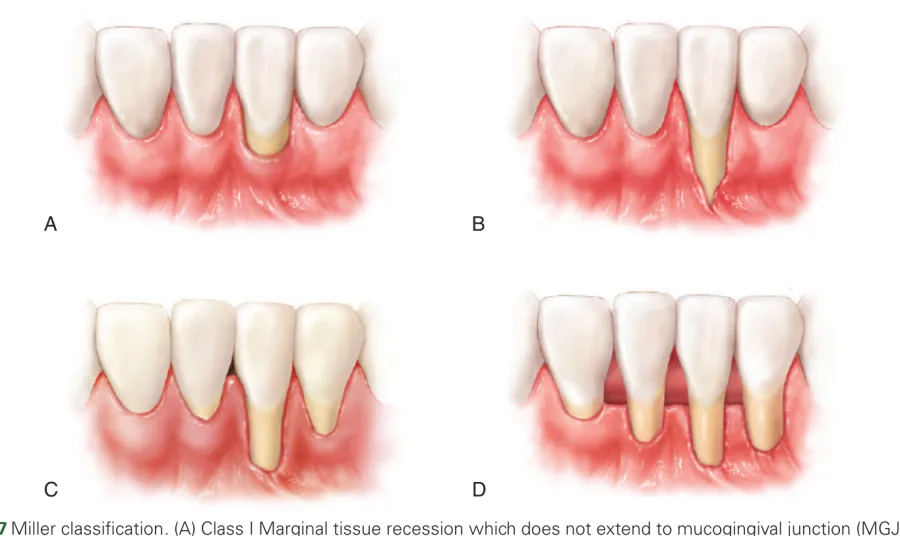

نسخه استخراجشده؛ ترجمه یا تأیید علمی انجام نشده است. وضعیت: captured
ارزیابی اندودنتیک باید در فاز آمادهسازی انجام شود: «معاینهی بالینی باید شامل تست حیات همهی دندانهای قوس دندانی باشد.» روشها: اسپری کرایوژن، «مداد یخ» (که بهسادگی با پر کردن کاور سوزن بیحسی از آب و فریز کردن ساخته میشود)، گوتاپرکای حرارتدیده، یا پالپتستر الکتریکی.
و یک تفکیک ظریف میان دو تست: «تست حرارتی مفیدتر در نظر گرفته میشود چون ممکن است درجهی التهاب پالپی را نشان دهد، در حالی که تست الکتریکی تنها آشکار میکند که آیا پالپ زنده است یا غیرزنده.»
و اصل درمانی: «بهعنوان یک قاعدهی کلی، درمان اندودنتیک متعارف (ارتوگرید) باید در صورت امکان بهجای جراحی (رتروگرید) انجام شود.» دو دلیل: «نهتنها به دلیل ترومای اضافی حاصل از رویکرد جراحی، بلکه چون آپیکواکتومی نسبت تاج به ریشه و در نتیجه حمایت پریودنتال پروتز برنامهریزیشده را بهطور نامطلوب متأثر میکند».
و دو عدد و یک نکتهی عملی: اگر یک پست موجود دسترسی به ضایعهی پریاپیکال عودکرده را مسدود کند، «پست معمولاً میتواند برداشته شود. پستهای کامپوزیت فایبر آسانترین برای برداشتناند، و استفاده از ارتعاش اولتراسونیک در شکستن سیل سمان یک پست فلزی کمککننده است.» و وقتی پست و کور در دندان درمانریشهشده لازم است، «۳ تا ۵ میلیمتر سیل آپیکال باید حفظ شود».
و اندو انتخابی: «هنگام تلاش برای بازکانتور کردن معنادار دندانها با روکش، درمان اندودنتیک انتخابی ممکن است لازم شود وقتی مشکلات متوسط تا شدید افقی یا عمودی در همترازی دندان وجود دارد. ارتودنسی برای اصلاح بدترازی دندان، درمان ترجیحی است و تجاوز تراش به پالپ را کاهش میدهد.»
و دربارهی بافت لثه، مقدار لازم هنوز محل بحث است — ولی یک تفکیک عملی وجود دارد: «در دهانی سالم که در معرض استرس حداقلی است، فقدان کامل بافت کراتینیزه ممکن است قابل قبول باشد. در دهانی که به پروتز ثابت جامع نیاز دارد، سطوح استرس دیگر حداقلی نیستند.» و برای دندان یا ایمپلنتی که ترمیمش وارد سولکوس لثه میشود، «یک نوار لثه (بافت کراتینیزه) توصیه میشود».
و ردهبندی میلر برای نقصهای لثهای — چهار کلاس با پیامدی روشن برای پوشش ریشه:
پس تعیینکنندهی پوشش ریشه، استخوان بیندندانی است، نه میزان تحلیل فاسیال. این تنها متغیری است که کلاس ۲ را از کلاس ۳ جدا میکند.
و چهار تکنیک پیوند با تاریخ و اندیکاسیونشان:

افزایش طول تاج جراحی چه فضایی میسازد؟ «برداشت استخوانی ۳٫۵ تا ۴٫۰ میلیمتر فضا میان کرست استخوانی و لبهی ترمیم موجود یا ضایعهی پوسیده ایجاد میکند.» گاهی افزایش طول تنها با ژنژیوکتومی ممکن است، «هرچند بازکانتور کردن استخوانی اغلب لازم است تا از تجاوز پروتز به عرض بیولوژیک جلوگیری شود».
و هشت عاملی که پیش از تصمیم باید سنجیده شوند — این فهرست را بهعنوان چکلیست بخوان:
و دو عدد زمانی که با هم میآیند: ترمیم دندانی که افزایش طول تاج جراحی داشته «معمولاً ۴ تا ۶ هفته پس از روش جراحی آغاز میشود». ولی یک مطالعهی بالینی نشان داد عرض بیولوژیک و موقعیت حاشیهی آزاد لثه «میان ۳ و ۶ ماه پس از جراحی تغییر حداقلی نشان دادند». بنابراین «ممکن است بهتر باشد که دندان مورد نظر پیش از یا بلافاصله پس از جراحی بهصورت موقت ترمیم شود، و متعاقباً ترمیم نهایی پس از ۳ تا ۶ ماه ساخته شود».
و دربارهی پاپیلا بیندندانی، یک عدد و یک اصل: یک مطالعه نشان داد «در لبخند حداکثری، ۹۱ درصد مردان و زنان پاپیلاهای بیندندانی را نمایش میدهند». و دربارهی بازسازی: «نتایج این روشها قابل پیشبینی یا قابل تکرار نبودهاند.» نتیجه: «حفظ یک پاپیلای موجود قابل پیشبینیتر از بازسازی یک پاپیلای از دست رفته است — در نتیجه، برداشت یک دندان قدامی باید همیشه دوباره ارزیابی شود.»
و ارتودنسی پیشپروتزی: حرکت جزئی دندانی میتواند «نقصهای پریودنتال را بهبود دهد، کانتورهای لثه را تراز کند، تناسب دندانها را بهینه کند، و همترازی محوری را برای تراشهای محافظهکارانهی روکش ایدهآل کند». و جمعبندیاش: «درمان ارتودنتیک احتمالاً اقتصادیترین و خردمندانهترین انتخاب درمانی است که یک بیمار میتواند بکند.»
و اعداد دقیق دو نوع اکستروژن — این تفکیک را حفظ کن:
و یک احتیاط: «وقتی هر دندان قدامی حرکت داده میشود، مقدار استخوان لبیال باید با دقت ارزیابی و کافی بودنش پیش از درمان تعیین شود.» ارتودنسی میتواند دندانها را اینتروژن هم بدهد تا حاشیههای نابهنجار لثه را بهبود بخشد و فضای پروتزی به دست آید، ولی «مکانیک ارتودنتیک که حاشیههای آزاد لثه را جابهجا میکند پیچیده است و سطح بالایی از آموزش میطلبد».
و دربارهی اکلوژن، دیدگاه امروز روشن است: «بر پایهی پژوهش کنونی، اکلوژن اثر محدودی بر پیدایش اختلالات مفصل گیجگاهی-فکی و عضلات وابسته دارد.» و «امروز، شواهد بالینی، بازشکلدهی اکلوزال را برای حل اختلالات گیجگاهی-فکی منع میکند.» تفکر معاصر به یک مدل بیماری زیستی-روانی-اجتماعی درد مزمن تغییر یافته است.
ولی یک استثنای مهم: «با این وجود، مشکلات اکلوزال یاتروژنیک که به پیدایش فرایندهای پاتولوژیک انجامیدهاند باید پیش از انجام درمان قطعی پروتز ثابت تشخیص داده و برطرف شوند.» و اگر دادههای بالینی قطعی نباشند، «این تشخیص اغلب میتواند با یک گارد اکلوزال بهعنوان وسیلهای غیرتهاجمی و برگشتپذیر به دست آید».